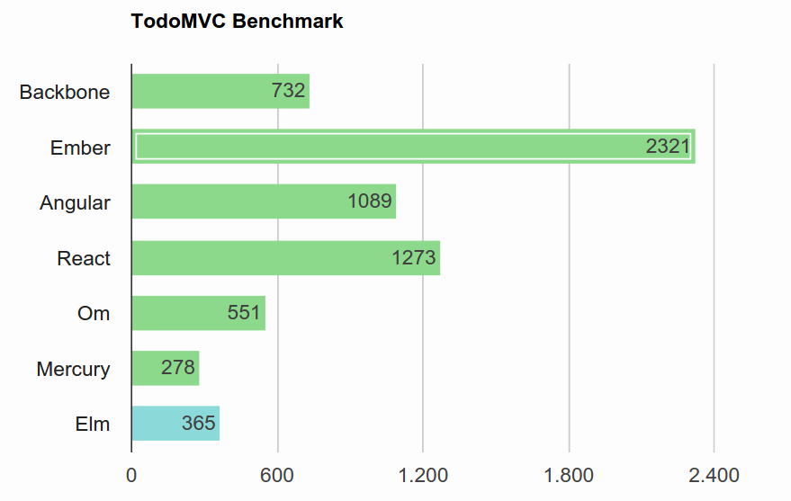

Elm
Functional Reactive Programming
in the Browser
Who's Talking?
Bastian Krol
Developer at@bastiankrol
basti1302
bastian.krol@codecentric.de
- Software Development
- Agile Coaching
- Consulting
- Continuous Delivery
- Agile Software Factory
- Software Architecture
- DevOps
- Performance Tuning
- Big Data
- Operations
We're hiring!
- Karlsruhe
- Stuttgart
- Frankfurt
- München
- Berlin
- Hamburg
- Solingen
- Düsseldorf
- Münster
- Dortmund
What is Elm
- Purely Functional
- Static Type System
- Reactive (FRP)
- Compiles to JavaScript
- Open Source
- Makes Web Development Delightful
Why Bother?
Marketing Blurbs
- Clean syntax
- No runtime exceptions
- Blazing fast rendering
- Libraries with SemVer guarantees
- Smooth JavaScript interop
- Time-traveling debugger
Reduce Bug Hunting
Bug by Nestor Ferraro / CC BY 2.0
Everything is Stateless
Everything is Immutable
Compiler catches 90%
Ancient Elm Proverb
Once it compiles, it just works!
Fast Rendering
Speed by snapp3r / CC BY-ND 2.0
Semver Guarantees
- Change public API of library
- Try to publish as minor/bugfix
- =>Nope
- Powered by Static Typing
Syntax Basics
Hello World
Elm
import Html
main = Html.text "Hello Karlsruhe!"
Result

Functions
Elm
import Html
greet str = Html.text str
main =
greet "Hello Karlsruhe!"
Result
Type Annotations
Elm
import Html exposing (Html)
greet : String -> Html
greet str =
Html.text str
main : Html
main =
greet "Hello Karlsruhe!"
Result
Parameter Types & Return Types
Elm
import Html exposing (Html)
import String
greet : Int -> String -> Html
greet number string =
Html.text
(String.repeat number string)
main : Html
main =
greet 3 "Hello Karlsruhe! "
Result
Function Application
aka Data Pipelines
Elm
greet : Int -> String -> Html
greet number string =
string
|> String.repeat number
|> Html.text
main : Html
main =
greet 3 "Hello Karlsruhe! "
Result
Functional Reactive Programming
in Elm
Signals
Elm
import Html exposing (Html)
import Mouse
toHtml : Int -> Html
toHtml x =
Html.text (toString x)
main : Signal Html
main =
Signal.map toHtml Mouse.x
Result
Signals (cont.)
Signals (cont.)
Signals (cont.)
Stuff you can do with signals
mergemultiple signalsmapsignals (transform each value)filtersignals (drop events)- ... lots of other interesting stuff ... :)
More on Signals
http://elm-lang.org/guide/reactivityhttps://github.com/evancz/elm-architecture-tutorial
The Elm Compiler is Your Friend
Typos
myFunction str =
String.repeat 3 str
main : Html
main =
Html.text (myFunctino "Elm")
-- NAMING ERROR ----------------------- errors/Spelling.elm
Cannot find variable `myFunctino`
9│ Html.text (myFunctino "Elm")
^^^^^^^^^^
Maybe you want one of the following?
myFunction
Type Mismatch
subMismatch =
{ name = "Alice", age = 24 } == { name = "Bob", age = "30" }
-- TYPE MISMATCH --------------------- errors/SubMismatch.elm
The right argument of (==) is causing a type mismatch.
2│ { name = "Alice", age = 24 } == { name = "Bob", age = "30" }
^^^^^^^^^^^^^^^^^^^^^^^^^^^^
(==) is expecting the right argument to be a:
{ ..., age : number }
But the right argument is:
{ ..., age : String }
Forgot a Case?
type Colour = Red | Green | Blue
colourToHex : Colour -> String
colourToHex colour =
case colour of
Red -> "#f00"
Green -> "#0f0"
Forgot a Case?
-- MISSING PATTERNS --------------- errors/ForgottenCase.elm
This `case` does not have branches for all possibilities.
5│> case colour of
6│> Red -> "#f00"
7│> Green -> "#0f0"
You need to account for the following values:
Main.Blue
Add a branch to cover this pattern!
Runtime Exceptions?
JavaScript
function repeatFirst(list) {
var repeated = list[0].repeat(3);
alert(repeated);
}
var list1 =
[ 'hip', 'hop', 'hooray!' ];
...
repeatFirst(list1);
var list2 = [];
...
repeatFirst(list2);
Compile Time > Runtime
repeatFirst list =
let elem = List.head list
in String.repeat 3 elem
> elm-make RepeatFirst.elm --output repeat-first.html
-- TYPE MISMATCH -------------------------- RepeatFirst.elm
The 2nd argument to function repeat is causing a mismatch.
8│ String.repeat 3 elem
^^^^
Function `repeat` is expecting the 2nd argument to be:
String
But it is:
Maybe a
Hint: I always figure out the type of arguments from left
to right. If an argument is acceptable when I check it, I
assume it is "correct" in subsequent checks. So the problem
may actually be in how previous arguments interact with the
2nd.
Corrected Version
repeatFirst list =
let elem = List.head list |> Maybe.withDefault ""
in String.repeat 3 elem
> elm-make RepeatFirst.elm --output repeat-first.html
Success! Compiled 1 modules.
Successfully generated repeat-first.html
Protection From Runtime Exceptions
Summary
- No runtime exceptions!
- Refactoring is easy and safe
- Coherent approach to user interaction with signals
- Fast rendering
- Can be introduced into existing JS code bases
- Uniform Structure for Apps (the Elm Architecture, not covered today)
Q. E. D.
Elm Makes
Web Development
Delightful
Links:
Questions?
Thank You!
@bastiankrol
basti1302
bastian.krol@codecentric.de